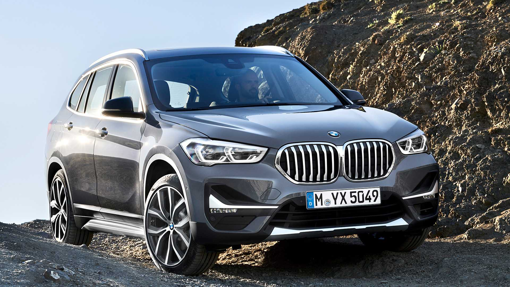
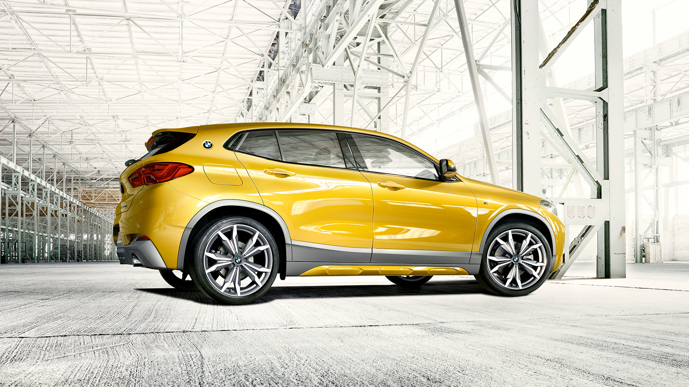

BMW X1
В ожидании знаковых событий: новый BMW X1 появился, чтобы задавать новые стандарты. Его стремление действовать выражается прежде всего в спортивном дизайне. В автомобиле сразу угадывается представитель семейства X: среди внешних особенностей обращают на себя внимание короткие свесы и длинная колесная база, ставшие неотъемлемыми чертами автомобилей класса SAV (Sports Activity Vehicle). Внешность, динамика и маневренность модели не оставляют сомнений в ее амбициях, а сочетание высокой практичности и универсальности с инновационными технологиями гарантирует максимальный комфорт, километр за километром.

BMW X2
Абсолютно уникальный. Экстремально необычный автомобиль. Новый BMW X2 с первого взгляда показывает свою спортивную сущность. Мощный и атлетичный, он предлагает динамику и манёвренность, которые в этом классе автомобилей не имеют себе равных. В сочетании с высококачественным дизайном интерьера и многочисленными инновационными технологиями – это экспрессивный герой новой эры. Дело только за Вами. Вы готовы?

BMW X3
BMW X3 – это символ безграничных возможностей и воплощение безудержной мощи и свободы. Уже с первого взгляда он впечатляет своим атлетичным видом. Благодаря полуавтономному вождению и интеллектуальной системе полного привода BMW xDrive он предлагает высший уровень комфорта как на дороге, так и за ее пределами. При этом он заново определяет стандарты в своем классе и недвусмысленно дает понять: есть большая разница в том, как доехать к месту назначения.